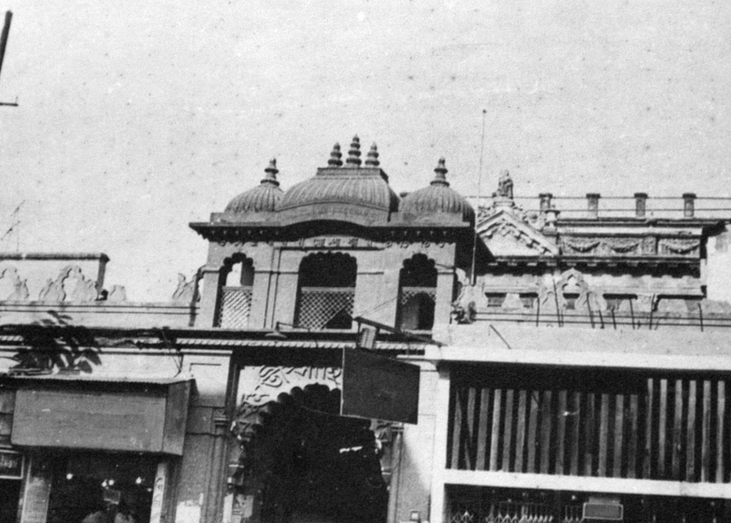
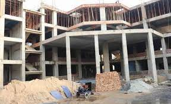
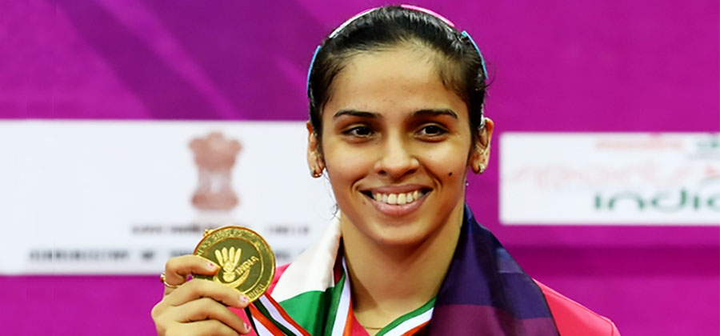
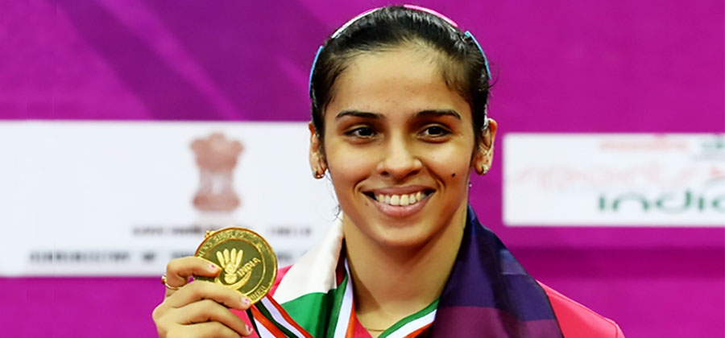

A Legacy of Learning: The 50-Year History of Surya Educational Institutions
Introduction (1960s-1970s):
Founded in the early 1960s by visionary educators and community leaders. Initially started as a small school with a handful of students. The institution's commitment to quality education laid the foundation for its growth.
Expansion and Excellence (1980s-1990s):
In the 1980s, Surya Educational Institutions expanded its offerings to include higher education programs. Achieved accreditation and recognition for its commitment to academic excellence. Developed a reputation for producing top-performing students in various fields.
Technological Advancements (2000s-2010s):
Embraced technology and modern teaching methods. Established state-of-the-art facilities and laboratories. Implemented e-learning platforms to enhance student engagement. Strengthened ties with industry partners for practical training and internships.
Community Engagement (2010s-Present):
Launched community outreach programs, including scholarships and skill development initiatives. Actively involved in social and environmental causes. Encouraged students to participate in volunteer work and community service.
Notable Alumni and Achievements:
 

Highlighted the achievements of alumni who have made significant contributions to various fields. Mentioned academic and research achievements. Recognized alumni who have excelled in leadership, entrepreneurship, and social impact.
Celebrating Milestones:
Marked key anniversaries and achievements with grand celebrations and events. Showcased the institution's growth and development over the years.
Vision for the Future:
Outlined the institution's future goals and aspirations. Emphasized its commitment to adapting to changing educational landscapes. Expressed the desire to continue fostering excellence and innovation.